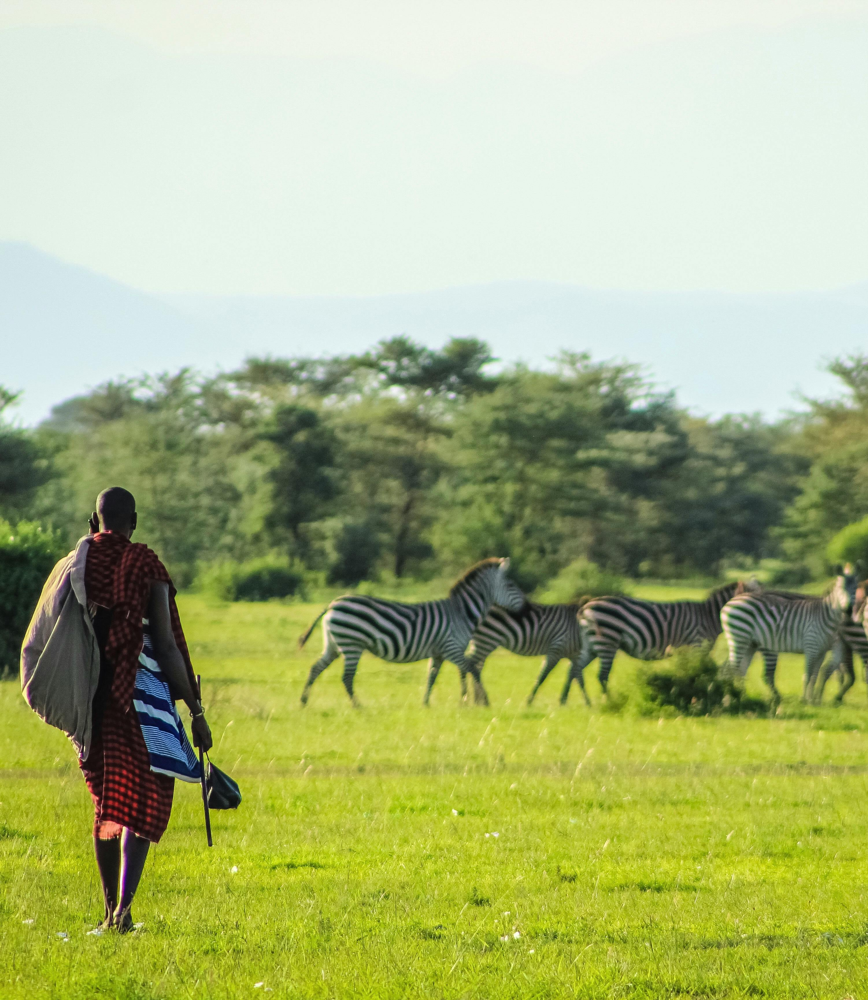

Maasai Mara National Reserve
March 20, 2025
The Maasai Mara is Kenya's most famous wildlife reserve, home to the spectacular annual wildebeest migration. Here, vast savannah plains meet the sky, dotted with acacia trees and teeming with wildlife including lions, elephants, giraffes, and cheetahs. The local Maasai people add rich cultural dimension to your safari experience.
Read more